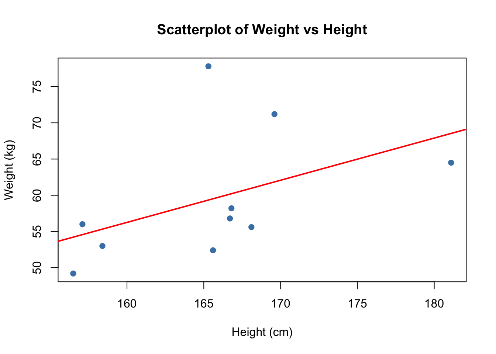

Height and weight data (Data file: Htwt) The table below and the the data file give ht = height in centimeters and wt = weight in kilograms for a sample of n = 10 18-year-old girls. The interest is in predicting weight from height.
library(alr4)
Loading required package: car
Loading required package: carData
Loading required package: effects
lattice theme set by effectsTheme()
See ?effectsTheme for details.
data(Htwt)library(knitr)kable(Htwt)
ht
wt
169.6
71.2
166.8
58.2
157.1
56.0
181.1
64.5
158.4
53.0
165.6
52.4
166.7
56.8
156.5
49.2
168.1
55.6
165.3
77.8
a. Draw a scatterplot of wt on the vertical axis versus ht on the horizontal axis. On the basis of this plot, does a simple linear model make sense for these data? Why or why not?
plot(Htwt$ht, Htwt$wt,xlab ="Height (cm)",ylab ="Weight (kg)",main ="Scatterplot of Weight vs Height",pch =19,col ="steelblue")abline(lm(wt~ht, data = Htwt), col ="red", lwd =2)

Base on the scatterplot, a simple linear model does not make sense for these data because te red regression line does not capture the actual data patterm well
b. Compute estimates of the slope and the intercept for the regression of Y on X. Draw the fitted line on your scatterplot.
model <-lm(wt~ht, data = Htwt) # wt = β0 + β1*htintercept <-coef(model)[1]slope <-coef(model)[2]cat("Intercept (β0):", round(intercept, 4), "kg\n")
Intercept (β0): -36.8759 kg
cat("Slope (β1):", round(slope, 4), "kg/cm\n")
Slope (β1): 0.5821 kg/cm
c. Interpret the parameter estimatesˆβ0 andˆβ1. Obtain the t-tests for the hypotheses that β0 = 0 and β1 = 0 and p-values using two-sided tests. What is your conclusion based on the p-values.
model_summary <-summary(model)
d. Obtain R2 and adjusted R2. What can you say about the them?
e. Check all the model assumptions for this simple linear regression.
Problem 2
(Data file: UBSprices) The international bank UBS regularly produces a report (UBS, 2009) on prices and earnings in major cities throughout the world. Three of the measures they include are prices of basic commodities, namely 1kg of rice, a 1kg loaf of bread, and the price of a Big Mac hamburger at McDonalds. An interesting feature of the prices they report is that prices are measured in the minutes of labor required for a “typical” worker in that location to earn enough money to purchase the commodity. Using minutes of labor corrects at least in part for currency fluctuations, prevailing wage rates, and local prices. The data file includes measurements for rice, bread, and Big Mac prices from the 2003 and the 2009 reports. The year 2003 was before the major recession hit much of the world around 2006, and the year 2009 may reflect changes in prices due to the recession. The figure below is the plot of y = rice2009 versus x = rice2003, the price of rice in 2009 and 2003, respectively, with the cities corresponding to a few of the points marked.
a. The line with equation y= xis shown on this plot as the solid line. What is the key difference between points above this line and points below the line?
# Fit the OLS regression modelmodel <-lm(rice2009 ~ rice2003, data = UBSprices)print(summary(model))
Call:
lm(formula = rice2009 ~ rice2003, data = UBSprices)
Residuals:
Min 1Q Median 3Q Max
-23.717 -7.105 -3.602 1.369 50.384
Coefficients:
Estimate Std. Error t value Pr(>|t|)
(Intercept) 12.5842 2.9442 4.274 8.21e-05 ***
rice2003 0.5014 0.1213 4.134 0.00013 ***
---
Signif. codes: 0 '***' 0.001 '**' 0.01 '*' 0.05 '.' 0.1 ' ' 1
Residual standard error: 12.93 on 52 degrees of freedom
Multiple R-squared: 0.2474, Adjusted R-squared: 0.2329
F-statistic: 17.09 on 1 and 52 DF, p-value: 0.0001302
c. The ols lineˆy=ˆβ0 +ˆβ1x is shown on the figure as a dashed line, and evidentlyˆβ1 < 1. Does this suggest that prices are lower in 2009 than in 2003? Explain your answer.
cat("NO, β̂₁ < 1 does NOT necessarily mean prices are lower in 2009.\n\n")
NO, β̂₁ < 1 does NOT necessarily mean prices are lower in 2009.
cat("Explanation:\n")
Explanation:
cat("• The slope β̂₁ measures the RATE OF CHANGE, not absolute levels\n")
• The slope β̂₁ measures the RATE OF CHANGE, not absolute levels
cat("• β̂₁ < 1 means: cities with higher 2003 prices tend to have\n")
• β̂₁ < 1 means: cities with higher 2003 prices tend to have
cat(" PROPORTIONALLY smaller increases (or larger decreases) by 2009\n")
PROPORTIONALLY smaller increases (or larger decreases) by 2009
cat("• This is 'regression to the mean' - extreme values tend to\n")
• This is 'regression to the mean' - extreme values tend to
cat(" moderate over time\n")
moderate over time
cat("• The intercept β̂₀ =", round(beta0, 2), "is positive, which can\n")
• The intercept β̂₀ = 12.58 is positive, which can
cat(" offset the slope < 1\n")
offset the slope < 1
cat("• To determine if prices are generally lower, we should compare\n")
• To determine if prices are generally lower, we should compare
cat(" mean prices:\n")
mean prices:
cat(" - Mean 2003 price:", round(mean(UBSprices$rice2003, na.rm=TRUE), 2), "minutes\n")
- Mean 2003 price: 19.46 minutes
cat(" - Mean 2009 price:", round(mean(UBSprices$rice2009, na.rm=TRUE), 2), "minutes\n")
- Mean 2009 price: 22.34 minutes
if(mean(UBSprices$rice2009, na.rm=TRUE) >mean(UBSprices$rice2003, na.rm=TRUE)) {cat(" - Prices INCREASED on average from 2003 to 2009\n\n")} else {cat(" - Prices DECREASED on average from 2003 to 2009\n\n")}
- Prices INCREASED on average from 2003 to 2009
d. Give two reasons why fitting simple linear regression to the figure in this problem is not likely to be appropriate.